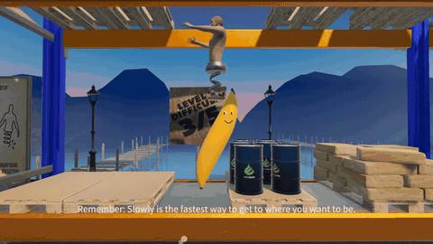
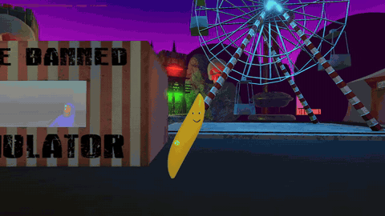
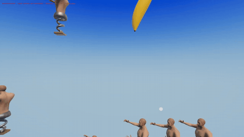

Spring Me Up review: a rage platformer, played as a banana

Spring Me Up is a 2.5D physics platformer from More Pain. You climb a huge world using nothing but a giant spring strapped to your body. You compress it, set the angle and hope you land where you aimed. Falling doesn't kill you, but it can cost you a lot of progress. The store page calls it "a peaceful, yet merciless experience", and each world has its own theme and hazards.
I made it harder on purpose. I modded myself into a giant yellow banana, and every shirtless spring man in the game took it personally. Bananas are not known for jumping. The game crashed three times, one version made everybody invisible, and when it finally worked I was in Level Two: a cave with a lot of torches, then a carnival with a booth called You're Banned Simulator. I renamed myself Zendaya Plus. Eventually the spring men stopped beating me up, a couple of them taught me how to fly, and the final jump took all of us.



It's $4.99 on Steam. The full modded run is below.